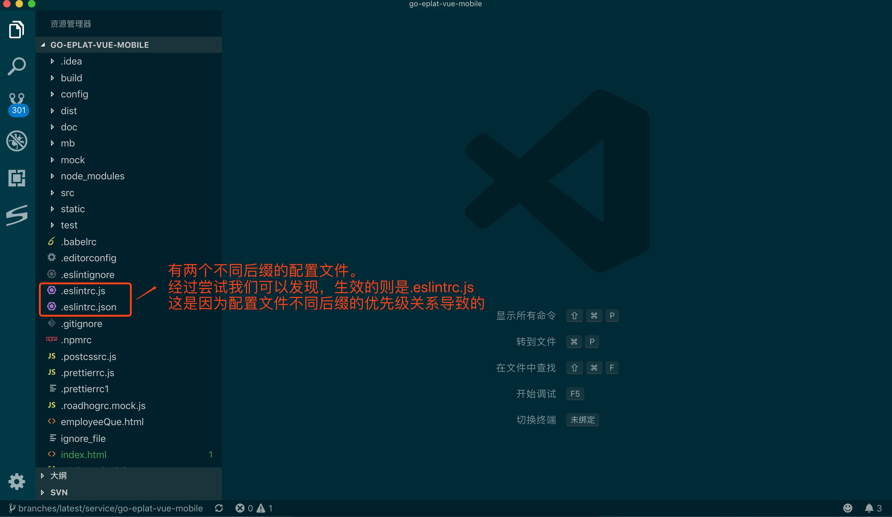
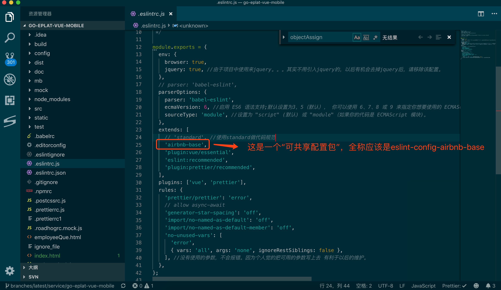
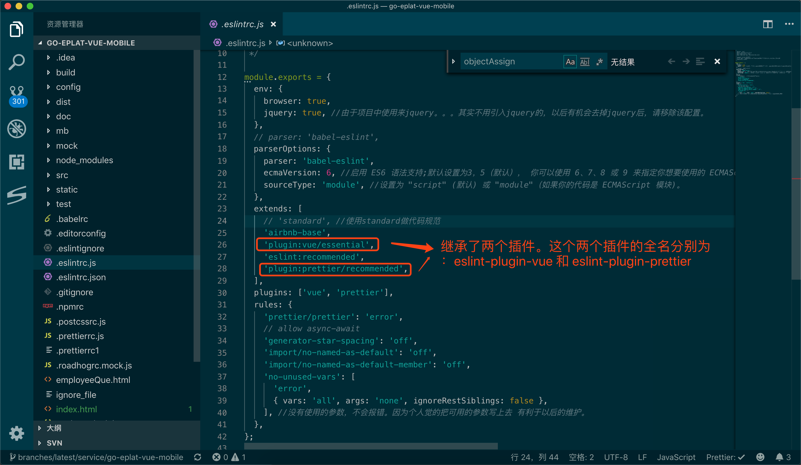
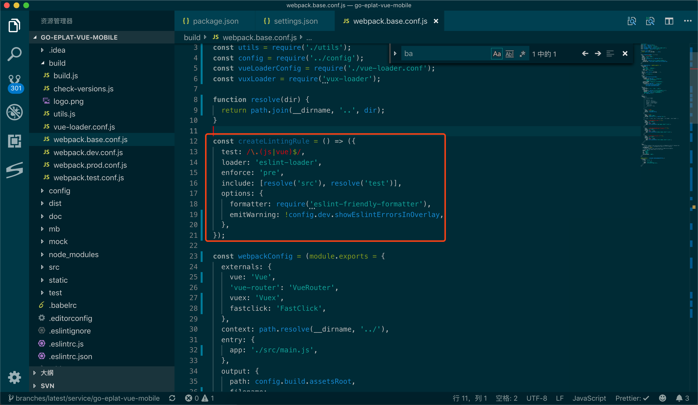

代码格式规范的自动化（eslint 与 prettier）
其实很早之前就想在工程中使用 eslint 和 prettier 来规范代码。可是 eslint 和 prettier 的相爱相杀，再加上框架（vue,react）的特有写法（jsx，template）等等总是让自己开发过程很痛苦，很懵逼，不知所措。所以每次都启用 esint，然后又禁用，又启用，又禁用，如此反复，周而复始。
前段时间看前端工程化相关的资料，发现其实工程代码格式规范是其中重要的环节之一。顾而，借着周末好好捋一捋 eslint 和 prettier，来达到开发的高效和规范。
在代码规范的道路上，我们终极目标是：
团队中的所有开发人员用一套代码规范规则，并且无需我们花太大的精力去为了格式而格式。希望有一套自动化工具，帮我们检测代码是否规范，如果不规范，则自动能够帮我们按照既定规范格式化。
通过对 eslint 和 prettier 的大致了解，其实可以发现，prettier 是用于格式化代码的。而代码规范规则的设置和代码上的 warn，error 等提醒，则是 eslint 来实现的。故而，我们的大目标应该是 eslint，然后把 prettier 集成进来。
ESLint
ESLint是一个开源的JavaScript代码检查工具，由 Nicholas C. Zakas 于 2013 年 6 月创建。代码检查是一种静态的分析，常用于寻找有问题的模式或者代码，并且不依赖于具体的编码风格。对大多数编程语言来说都会有代码检查，一般来说编译程序会内置检查工具。
ESLint 的所有规则都被设计成可插入的。ESLint 的默认规则与其他的插件并没有什么区别，规则本身和测试可以依赖于同样的模式。
因此可配置、插件式是 ESLint 的最大特点，也是我们热衷使用它的原因。
如何配置
配置 ESLint 有两种方式：
- 使用
JavaScript注释把配置信息直接嵌入到一个代码源文件中 - 配置文件式
这两种方式中，“配置文件”是最常见的配置方式。使用 JavaScript、JSON或者 YAML 文件为整个目录（处理你的主目录）和它的子目录指定配置信息。ESLint 会查找和自动读取它们，再者，你可以在命令行运行时指定一个任意的配置文件。
ESLint 支持几种格式的配置文件：
JavaScript- 使用.eslintrc.js然后输出一个配置对象。YAML- 使用.eslintrc.yaml或.eslintrc.yml去定义配置的结构。JSON- 使用.eslintrc.json去定义配置的结构，ESLint的JSON文件允许JavaScript风格的注释。- (弃用) - 使用
.eslintrc，可以使JSON也可以是 YAML。 package.json- 在package.json里创建一个eslintConfig属性，在那里定义你的配置。
如果同一个目录下有多个配置文件，ESLint 只会使用一个。优先级顺序如下：
.eslintrc.js.eslintrc.yaml.eslintrc.yml.eslintrc.json.eslintrcpackage.json
由于 js 里面可以很方便的书写逻辑，并且它的优先级又比较高，故而建议使用 js 文件来当作配置文件。

这些配置啥意思
可配置是 ESLint 的特点之一。也就意味着我们必须了解每个配置项什么意思，才能玩转 ESLint。因此接下来我们来看看常用配置项是什么意思。
Parser
ESLint 默认使用 Espree 作为其解析器，你可以在配置文件中指定一个不同的解析器.
以下解析器与 ESLint 兼容：
- Esprima
- Babel-ESLint - 一个对 Babel 解析器的包装，使其能够与
ESLint兼容。 - typescript-eslint-parser(实验) - 一个把 TypeScript 转换为 ESTree 兼容格式的解析器，这样它就可以在
ESLint中使用了。这样做的目的是通过ESLint来解析 TypeScript 文件（尽管不一定必须通过所有的ESLint规则）。 注意，在使用自定义解析器时，为了让ESLint在处理非ECMAScript 5特性时正常工作，配置属性parserOptions仍然是必须的。解析器会被传入parserOptions，但是不一定会使用它们来决定功能特性的开关。
parserOptions
这个属性常用于设置语法解析器的一些配置。可用的选项有：
ecmaVersion: 制定ECMAScript的版本。
默认设置为 3，5（默认）， 你可以使用 6、7、8 或 9 来指定你想要使用的 ECMAScript 版本。你也可以用使用年份命名的版本号指定为 2015（同 6），2016（同 7），或 2017（同 8）或 2018（同 9）
sourceType: 源码类型
设置为 "script" (默认) 或 "module"（如果你的代码是 ECMAScript 模块)。
ecmaFeatures： 这是个对象，表示你想使用的额外的语言特性:
3.1
globalReturn- 允许在全局作用域下使用return语句3.2
impliedStrict- 启用全局 strict mode (如果ecmaVersion是 5 或更高)3.3
jsx- 启用JSX3.4
experimentalObjectRestSpread- 启用实验性的object rest/spread properties支持。(重要：这是一个实验性的功能,在未来可能会有明显改变。 建议你写的规则 不要 依赖该功能，除非当它发生改变时你愿意承担维护成本。)
设置解析器选项能帮助
ESLint确定什么是解析错误，所有语言选项默认都是false
Environments
该配置属性定义来一组预定义的全局变量。可用的环境包括：
browser- 浏览器环境中的全局变量。node-Node.js全局变量和Node.js作用域。commonjs-CommonJS全局变量和CommonJS作用域 (用于Browserify/WebPack打包的只在浏览器中运行的代码)。shared-node-browser-Node.js和Browser通用全局变量。es6- 启用除了modules以外的所有ECMAScript 6特性（该选项会自动设置ecmaVersion解析器选项为 6）。worker-Web Workers全局变量。amd- 将require()和define()定义为像amd一样的全局变量。mocha- 添加所有的Mocha测试全局变量。jasmine- 添加所有的Jasmine版本 1.3 和 2.0 的测试全局变量。jest-Jest全局变量。phantomjs-PhantomJS全局变量。protractor-Protractor全局变量。qunit-QUnit全局变量。jquery-jQuery全局变量。prototypejs-Prototype.js全局变量。shelljs-ShellJS全局变量。meteor-Meteor全局变量。mongo-MongoDB全局变量。applescript-AppleScript全局变量。nashorn-Java 8 Nashorn全局变量。serviceworker-Service Worker全局变量。atomtest-Atom测试全局变量。embertest-Ember测试全局变量。webextensions-WebExtensions全局变量。greasemonkey-GreaseMonkey全局变量。 这些环境并不是互斥的，所以你可以同时定义多个。
Globals
我们使用第三方提供的全局变量的时候（例如：jQuery,AMap 等对象），ESLint 并不能识别他们，总是会报错。这个时候，该配置的作用就出现了。使用 globals 指出你要使用的全局变量。将变量设置为 true 将允许变量被重写，或 false 将不允许被重写。
Plugins
ESLint 支持使用第三方插件。在使用插件之前，你必须使用包管理工具安装它。
在配置文件里配置插件时，可以使用 plugins 关键字来存放插件名字的列表。插件名称可以省略 eslint-plugin- 前缀。
Rules
ESLint 附带有大量的规则。你可以使用注释或配置文件修改你项目中要使用的规则。要改变一个规则设置，你必须将规则 ID 设置为off、warn、error三者之一。
继承配置文件
基本要用的配置属性在上面都已经涉及到了。但是我们之前讲过 ESLint 不仅有可配性，还有插件的可插拔性。那么插件又是如何工作的呢？插件无外乎是增强某些功能，并且对外提供接口。在 ESLint 中，插件一般都是通过继承的方式，来实现对外提供特定功能。
extends
一个配置文件可以从基础配置中继承已启用的规则。
extends 属性值可以是：
(1)、在配置中指定的一个字符串
(2)、字符串数组：每个配置继承它前面的配置
ESLint 递归地进行扩展配置，所以一个基础的配置也可以有一个 extends 属性。
extends 里面可以引入 共享配置包，可以引入 插件
- 共享配置包
可共享的配置 是一个 npm 包，它输出一个配置对象。
extends 属性值可以省略包名的前缀 eslint-config-。

- 插件
插件 是一个 npm 包，通常输出规则。一些插件也可以输出一个或多个命名的 配置。
plugins 属性值 可以省略包名的前缀 eslint-plugin-。
extends 属性值可以由以下组成：
（1）、plugin:
（2）、包名 (省略了前缀，比如，react)
（3）、/
（4）、配置名称 (比如 recommended)

Prettier
Prettier 是一个代码格式化工具。能够按照我们的规则，将我们的代码格式化。
为什么我们用它，而不用其他的代码格式化工具呢？Prettier 主要有以下优点：
- 可配置化
- 支持多种语言
- 集成多数的编辑器
- 简洁的配置项
ESLint + Prettier
团队中的所有开发人员用一套代码规范规则，并且无需我们花太大的精力去为了格式而格式。希望有一套自动化工具，帮我们检测代码是否规范，如果不规范，则自动能够帮我们按照既定规范格式化。------我们的终极目标
通过上面的了解，要想达到我们的终极目标似乎就是将这两个一起使用即可。那么如何整合他们呢？
以vue工程为例：
第一步： 下载相关包
最基本的，我们肯定要下载eslint，prettier这两个包的。
其次，为了将其整合起来那么我们需要已写好的“共享配置包”和插件。因此我们需要下载eslint-plugin-prettier,eslint-config-prettier。
再次，我们需要站在巨人的肩膀上看世界。也就是我们需要业界一些比较成熟的规范，来规范我们的代码。因此我们可以使用大团队提供的代码规范插件。比较有名的就是airbnb。这里我们选用的是airbnb-base。故而我们需要下载eslint-config-airbnb-base。
最后，为了完美使用我们 ES6 的一些新特性。我们需要将“词法解析器”设置为babel-eslint。因此我们还需要下载babel-eslint.
对了，我们是vue工程，那么肯定要有对 vue 配置的插件，因此我们需要下载eslint-plugin-vue
总结可得，我们需要下载以下包
npm install esint prettier eslint-plugin-prettier eslint-config-prettier eslint-config-airbnb-base babel-eslint eslint-plugin-vue
第二步 建立配置文件
如果仔细阅读了之前eslint的配置项，那么这一步是比较机械化的。因此我直接将工程中的配置文件拷贝过来，加以注释吧。
在工程的根目录，创建一个.eslintrc.js文件，文件内容如下：
module.exports = {
env: {
browser: true,
jquery: true, //由于项目中使用来jquery。。。其实不用引入jquery的，以后有机会去掉jquery后，请移除该配置。
},
parserOptions: {
parser: 'babel-eslint', //词法解析器使用babel-eslint，以更好的适配es6的新api
ecmaVersion: 6, //启用 ES6 语法支持;默认设置为3，5（默认）， 你可以使用 6、7、8 或 9 来指定你想要使用的 ECMAScript 版本。你也可以用使用年份命名的版本号指定为 2015（同 6），2016（同 7），或 2017（同 8）或 2018（同 9）
sourceType: 'module', //设置为 "script" (默认) 或 "module"（如果你的代码是 ECMAScript 模块)。
},
extends: [
'airbnb-base',
'eslint:recommended',
'plugin:vue/essential',
'plugin:prettier/recommended',
],
plugins: ['vue', 'prettier'],
rules: {
'prettier/prettier': 'error',
'generator-star-spacing': 'off',
'import/no-named-as-default': 'off',
'import/no-named-as-default-member': 'off',
'no-unused-vars': [
'error',
{ vars: 'all', args: 'none', ignoreRestSiblings: false },
], //没有使用的参数，不会报错。因为个人觉的把可用的参数写上去 有利于以后的维护。
},
};
开发工具
其实到上一步的话，已经将ESlint和Prettier配置完了。但是要能够自动格式化，那么我们还需要做一些集成。
实现自动格式化这一目标，可以在开发工具上做文章，也可以在webpack上做文章。其实我比较倾向在开发工具上实现自动格式化，因为这样子似乎比较快。
在开发工具中，我们希望在修改代码保存后，能够自动格式化代码。如何实现这一目标呢？我们以VScode为例
- 打开
VScode的配置文件
- 打开

- 增加以下配置.
...
"prettier.eslintIntegration": true,
"eslint.autoFixOnSave": true,
"editor.formatOnSave": true,
//配置 ESLint 检查的文件类型
"eslint.validate": ["javascript", "javascriptreact", "vue", "html"],
"eslint.options": {
"configFile": "./`.eslintrc`.js"
},
...
webpack
除了可以在开发工具上做文章，也可以在打包编译工具上做文章，以实现自动格式化的目标。我们以webpack为例：

因为vue工程通常会用官方提供的脚手架，所以这里我直接上图了，就不BB了。（其实是时间太晚了，明天还要上班，老婆已经再催了）
后记
其实我们在代码规范方面，利用eslint还可以做很多很多事情。
比如，我们可以增加一个脚本，来检测代码是否规范。
我们也可以在git提交前，做一次自动检测，避免团队中提交不规范的代码。可以借阅code review的一部分精力，可以把code review的重点放在代码逻辑本身的合理性上。
好吧，晚安～